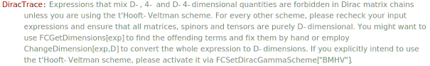

GAE[mu] can be used as input for a D-4-dimensional \gamma^{\mu }and is transformed into DiracGamma[LorentzIndex[mu, D-4], D-4] by FeynCalcInternal (FCI).
GAE[mu, nu , ...] is a short form for GAE[mu].GAE[nu] ....
Overview, DiracGamma, GA, GS, GAD.
GAE[\[Mu]]\hat{\gamma }^{\mu }
GAE[\[Mu], \[Nu]] - GAE[\[Nu], \[Mu]]\hat{\gamma }^{\mu }.\hat{\gamma }^{\nu }-\hat{\gamma }^{\nu }.\hat{\gamma }^{\mu }
StandardForm[FCI[GAE[\[Mu]]]]
(*DiracGamma[LorentzIndex[\[Mu], -4 + D], -4 + D]*)GAE[\[Mu], \[Nu], \[Rho], \[Sigma]]\hat{\gamma }^{\mu }.\hat{\gamma }^{\nu }.\hat{\gamma }^{\rho }.\hat{\gamma }^{\sigma }
StandardForm[GAE[\[Mu], \[Nu], \[Rho], \[Sigma]]]
(*GAE[\[Mu]] . GAE[\[Nu]] . GAE[\[Rho]] . GAE[\[Sigma]]*)GAE[\[Alpha]] FVD[p, \[Alpha]] // Contract\hat{\gamma }\cdot \hat{p}
GAE[\[Alpha]] FV[p, \[Alpha]] // Contract0
In order to use Dirac algebra with D-4-dimensional objects you need to activate the t’Hooft-Veltman-Breitenlohner-Maison scheme first
FCSetDiracGammaScheme["NDR"]
DiracSimplify[GAE[\[Mu]] . GAD[\[Mu]]]\text{NDR}

\text{\$Aborted}
FCSetDiracGammaScheme["BMHV"]
DiracSimplify[GAE[\[Mu]] . GAD[\[Mu]]]\text{BMHV}
D-4
FCSetDiracGammaScheme["NDR"]\text{NDR}